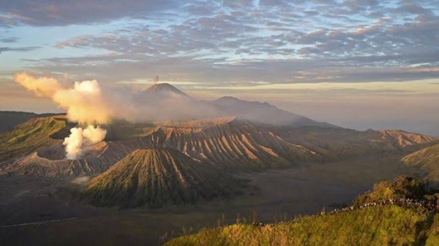

Gunung Bromo, yang terletak di Jawa Timur, Indonesia, adalah salah satu gunung berapi paling terkenal di Indonesia. Dengan ketinggian 2.329 meter di atas permukaan laut, Gunung Bromo menawarkan pemandangan yang menakjubkan dan pengalaman yang tidak terlupakan bagi para pengunjungnya.
Pemandangan matahari terbit di Gunung Bromo adalah salah satu atraksi utama. Banyak pengunjung yang rela bangun pagi-pagi sekali untuk mendaki ke puncak Penanjakan, titik terbaik untuk menyaksikan keindahan matahari terbit dengan latar belakang Gunung Bromo, Gunung Batok, dan Gunung Semeru yang megah.
Selain pemandangan matahari terbit, kawah Gunung Bromo sendiri juga sangat menarik untuk dieksplorasi. Pengunjung bisa berjalan kaki atau menunggang kuda menuju kawah untuk melihat langsung aktivitas vulkanik di dalamnya. Pemandangan dari bibir kawah sangat memukau dan memberikan pengalaman yang unik.
Di sekitar Gunung Bromo, terdapat juga lautan pasir yang luas, sering disebut sebagai "Lautan Pasir Tengger". Tempat ini menawarkan pemandangan yang eksotis dan memberikan nuansa yang berbeda dibandingkan dengan tempat-tempat lain di Indonesia.
Gunung Bromo adalah destinasi yang sempurna bagi para pecinta alam dan petualangan. Dengan keindahan alamnya yang luar biasa dan pengalaman yang tak terlupakan, tidak heran jika Gunung Bromo menjadi salah satu tujuan wisata utama di Indonesia.
Jadi, tunggu apa lagi? Mulailah petualanganmu hari ini dan nikmati keindahan alam Gunung Bromo dengan segala pesonanya.